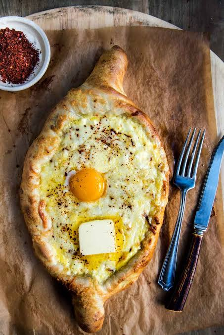

Home Page
Khachapuri

Description
Ajarski khachapuri is a boat-shaped Georgian bread with a cheese-stuffed crust and an egg baked into the center. This versatile bread takes a little finesse, but the payoff is well worth it; after all, what more could you want other than cheesy, soft, chewy bread dipped in runny yolk and molten cheese?
Ingredients
Dough:
- ½ cup warm milk
- ⅓ cup warm water
- 1 (.25 ounce) package active dry yeast
- 1 ½ teaspoons white sugar
- 2 ¼ cups all-purpose flour, or more as needed, for dusting
- 2 teaspoons olive oil
- 1 ½ teaspoons kosher salt
Cheese Blend:
- 8 ounces feta cheese, crumbled
- 4 ounces Monterey Jack cheese, shredded
- 4 ounces low-moisture mozzarella cheese, shredded
Filling:
- 2 large eggs
- 1 tablespoon butter, cut into 4 pats
- Sea salt to taste
- 1 pinch cayenne pepper, or to taste (Optional)